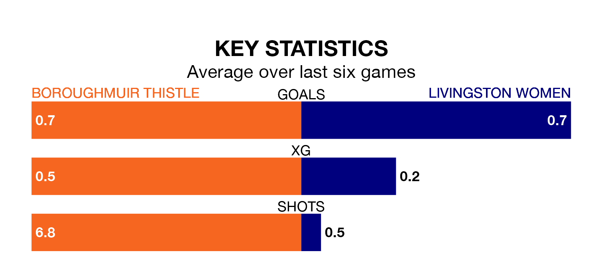

Two of SWPL 2's top sides face each other at the Meadowbank Stadium in Sunday lunchtime's kick-off, when fourth-placed Boroughmuir Thistle host third-placed Livingston Women.
Boroughmuir Thistle have picked up eight wins and six draws from 22 games so far this season, and sit four points below the visitors going into the 1pm match.
Livingston, meanwhile, have won 10 and drawn four, picking up 34 points.
With 35 goals in 22 games so far this season, Livingston are scoring at below the league average rate with 1.6 goals per game. But they are conceding fewer than average too, letting in 32 goals at a rate of 1.5 per game.
Boroughmuir Thistle are also below average scorers, with 1.7 goals per game, compared to a league average of 1.8. They have conceded 1.1 goals per game.
The home side are in disappointing form in SWPL 2, with one win and two draws from their last six games.
And also with a win and two draws over that period, the visitors' form is identical – they have both taken five points from 18.
In the last three years, Boroughmuir Thistle and Livingston have played each other on three occasions. Boroughmuir Thistle won one of them and they drew the other.
Their last meeting was on February 11, when Boroughmuir Thistle won 2-1 away.
Boroughmuir Thistle's last match was on March 31, a 0-0 draw against Glasgow Women.
Livingston drew 1-1 with Kilmarnock Women last time out, also on March 31, with on the scoresheet.
Updated: 11:20 (UTC), 09/04/24